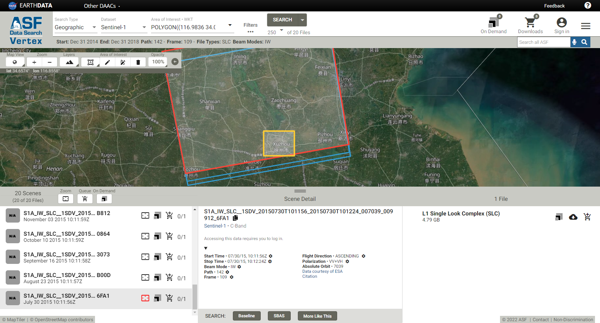

Pre-StamPS Land Subsidence in Xuzhou Feng-Pei County using StaMPS in LiDO3
Intro
This post is about working in Land Subsidence in Feng-Pei county in Xuzhou city. Cause the only free and available SAR dataset in this area is Sentinel-1A, so we downloaded 20 scenes SLC data to process.
Dataset

Process
In this process, we use snap2stamps to prepare INSAR_master_date folder for StaMPS.
Anaconda
Cause snap2stamps needs python 2 environment, so we use anaconda1 to manage python environment and easy switch between python3 and python 2.
Switching between Python 2 and Python 3 environments2:
1 | |
SNAP prepare
-
File location: File I:/SAR/Data/Xuzhou/Sentinel/Path_142/Frame_109
-
Master select3 - Radar / Interferometric / InSAR Stack Overview: 28OCT2016 2016-10-28
-
Perform subsetting - Radar / Sentinel-1 TOPS / S-1 TOPS Split
- subswath (IW 2)
- polarization (vertical sent, vertical returned - VV), and
- bursts (using the bursts-slider) in the respective tab (1-7)
- Graph Builder (I:/SAR/Data/Feng_Pei/Auxiliary)
- Batch Processing (I:/SAR/Data/Feng_Pei/Pre)
- Subset
POLYGON ((117.335 33.977, 116.61 33.977, 116.61 35.122, 117.355 35.122, 117.335 33.977))
POLYGON ((116.61 34.130, 117.335 34.130, 117.335 35.117, 116.61 35.117, 116.61 34.130))
snap2stamps
Note that snap2stamps requires Python 2.7, so we work the fellowing step in ubuntu, wsl.
Python environmeng
- Download python2
1 | |
- Change the Python3 default version in Ubuntu4
1 | |
- Start working in python2 environment
1 | |
Config snap2stamps
1 | |
Working in snap2stamps
- Go to snap2stamps folder and start processing.
1 | |
Error 1 SyntaxError: invalid syntax:
2
3
4
5>>> python slaves_prep.py project.conf
File "<stdin>", line 1
python slaves_prep.py project.conf
^
SyntaxError: invalid syntax
Solution5:
Looks like your problem is that you are trying to run python test.py from within the Python interpreter, which is why you’re seeing that traceback.
Make sure you’re out of the interpreter, then run the python test.py command from bash or command prompt or whatever.
1 | |
Error2 Can’t install pathlib and pip2 in python2
Solution6:
2
3
4
5
6
7
8
9$ wget https://bootstrap.pypa.io/get-pip.py
$ sudo python2 get-pip.py
$ pip 20.3.4 from /home/yuchi/.local/lib/python2.7/site-packages/pip (python 2.7)
$ pip2 install pathlib
$ python2
Python 2.7.18 (default, Mar 8 2021, 13:02:45)
[GCC 9.3.0] on linux2
Type "help", "copyright", "credits" or "license" for more information.
>>> help('modules')
- Start process snap2stamps
1 | |
Error 3 subprocess.popen no such file or directory in
1 | |
Solution: Try add an extra parameter shell=True to the Popen call7.
Error 4: SNAP STDOUT:/mnt/i/SAR/Data/Feng_Pei/project/graphs/splitgraph2run.xml: 1: /mnt/c/Program: not found in
1 | |
Solution: Edit conf file GPTBIN_PATH=/mnt/c/‘Program Files’/snap/bin/gpt.exe instead of GPTBIN_PATH=/mnt/c/Program Files/snap/bin/gpt.exe
Error 5 GDAL not found on system in step2
1 | |
Regarding GDAL versions compatible with SNAP, these are:
Windows: 2.1.x - 3.0.x
Linux: 2.0.x - 3.0.x
Mac: 2.0.x - 3.0.x
or by manually updating the configuration (for users using SNAP with no GUI):
in .snap/etc/s2tbx.properties, add: s2tbx.dataio.gdal.installed=false19
And the file is hidden in home/yuchi/.snap/etc/s2tbx.properties, use show hidden to locate file.
Solution
Change of two attributes in range and azimute for snap V.7 and later8.
1 | |
IMPORTANT: snap2stamps is a dead end, change to SNAP desktop!
UPDATE
This maybe caused by configuration between windows and Ubuntu wsl, so we try to install SNAP in Ubuntu directly.
-
How to install SNAP in Ubuntu command line?
Building S1TBX from the source12
1
2
3
4
5
6
7$ git clone https://github.com/senbox-org/s1tbx.git
$ git clone https://github.com/senbox-org/snap-desktop.git
$ git clone https://github.com/senbox-org/snap-engine.git
$ git clone https://github.com/senbox-org/snap-installer.git
$ mvn clean install
#If unit tests are failing, you can use the following to skip the tests
$ mvn clean install -Dmaven.test.skip=true
Error 6 mvn clean install
Building SNAP from sources : errors during the “mvn clean install”13.
1 | |
Solution by marpet @ STEPForum
This happens when you use Java 9 or 10. SNAP is not yet compatible with these Java versions13.
You can either switch to Java 8, that’s what I would suggest, or you can change how Java is handling these incompatibility issues.
To switch between installed java versions, use the update-java-alternatives command14.
Installing Open JDK 8 on Debian or Ubuntu Systems15.
SNAP successly installed in Ubuntu
Check post ‘Setup and Problem-Solving in WSL2’ for details in SNAP install in WSL.
Add breakpoints in python
The module pdb defines an interactive source code debugger for Python programs10.
1 | |
Error 7 Unknown element ‘useSuppliedShifts’
Error: [NodeId: Enhanced-Spectral-Diversity] Operator ‘SpectralDiversityOp’: Unknown element ‘useSuppliedShifts’
Solution
1 | |
Error 8 Java Heap Space Error
Solution
1 | |
Error 9 Process stopped at 20%
/mnt/i/SAR/Data/Feng_Pei/project//split/20150730/20150730_IW2.dim
Processing slave file :20150730_IW2.dim
SNAP STDOUT:INFO: org.esa.snap.core.gpf.operators.tooladapter.ToolAdapterIO: Initializing external tool adapters
INFO: org.esa.s2tbx.dataio.gdal.GDALVersion: Incompatible GDAL 3.3.2 found on system. Internal GDAL 3.0.0 from distribution will be used.
INFO: org.esa.s2tbx.dataio.gdal.GDALVersion: Internal GDAL 3.0.0 set to be used by SNAP.
INFO: org.esa.snap.core.util.EngineVersionCheckActivator: Please check regularly for new updates for the best SNAP experience.
INFO: org.esa.s2tbx.dataio.gdal.GDALVersion: Internal GDAL 3.0.0 set to be used by SNAP.
Executing processing graph
INFO: org.hsqldb.persist.Logger: dataFileCache open start
INFO: org.esa.s1tbx.sentinel1.gpf.SpectralDiversityOp: Shifts written to file: /home/yuchi/.snap/var/log/IW2_range_shifts.json
INFO: org.esa.s1tbx.sentinel1.gpf.SpectralDiversityOp: Estimating azimuth offset for blocks in overlap: 1/6
INFO: org.esa.s1tbx.sentinel1.gpf.SpectralDiversityOp: Estimating azimuth offset for blocks in overlap: 2/6
INFO: org.esa.s1tbx.sentinel1.gpf.SpectralDiversityOp: Estimating azimuth offset for blocks in overlap: 3/6
INFO: org.esa.s1tbx.sentinel1.gpf.SpectralDiversityOp: Estimating azimuth offset for blocks in overlap: 4/6
INFO: org.esa.s1tbx.sentinel1.gpf.SpectralDiversityOp: Estimating azimuth offset for blocks in overlap: 5/6
INFO: org.esa.s1tbx.sentinel1.gpf.SpectralDiversityOp: Estimating azimuth offset for blocks in overlap: 6/6
INFO: org.esa.s1tbx.sentinel1.gpf.SpectralDiversityOp: Shifts written to file: /home/yuchi/.snap/var/log/IW2_azimuth_shifts.json
…10%…20%.
Finished process in 761.911759138 seconds.
Solution
Working in SNAP Desktop
Work base on tutorial written by Amir Shafaei9.
-
Applying TOPSAR split and precise orbit on all the SLC data
-
Finding the master SLC: 28.10.2016
-
Making a Stack by back geocoding from the processed data while the master SLC is set at top of the table.
Radar>Coregistration >s1top Coregistration> s1 back geocoding -
TopSAR deburst
Radar > sentinel 1 top > S1 top deburst